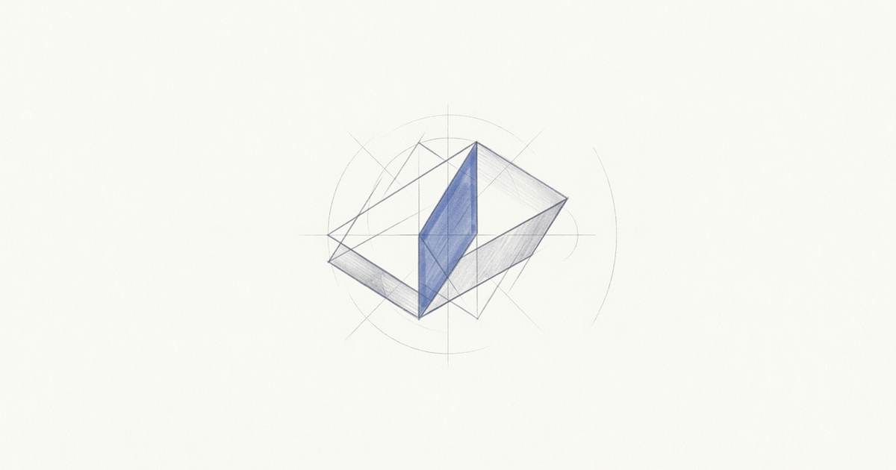

1今日头条 头条
FCC 批准 SpaceX 在轨部署百万颗 AI 卫星
11-26 北京时间1独立来源 4 家
SpaceX Starmind 卫星效果图（GeekWire）
介绍
FCC 批准 SpaceX 部署至多 100 万颗搭载 AI 芯片的卫星，在轨道上组成数据中心——这是迄今最大规模的在轨算力计划，首批发射定在 2027 年。
为什么重要
算力的争夺从地面打到了轨道：若按期推进，SpaceX 将在 2040 年前建成一个不受地面电网与土地约束的太空数据中心网络；反对者担心的天文观测干扰与轨道拥堵，被 FCC 一并驳回。
要点
- FCC 于 2026-11-25 批准 SpaceX 部署至多 100 万颗搭载 AI 芯片的卫星，在轨组成数据中心（批文号 DA 26-1273），首批发射计划 2027 年。
- 部署有硬性时间表：首颗须在 2033-11-25 前上天，10% 在 2035 年前、50% 在 2038 年前、全部在 2040 年前，否则授权作废。
- 卫星轨道高度 500–1,002 公里；SpaceX 于 2026-01-30 提交申请。
- Kuiper、Viasat 及美国天文学会的反对请愿被驳回；600 公里以上卫星的‘坟墓轨道’处置请求被搁置。
2信任危机
Character.AI 破产拍卖私密聊天，42 州检察长介入
11-26 01:35 北京时间2独立来源 3 家
Character.AI（TechCrunch）
介绍
Character.AI 在破产程序中拟拍卖用户私密聊天记录，42 位州检察长联名反对：数据集涉及超 2,100 万美国账户，其中逾 210 万是未成年人。
为什么重要
这是 AI 聊天机器人信任危机的分水岭：公司曾承诺不出售个人信息，如今破产拍卖可能让承诺作废；12 月 1 日的拍卖与 2027 年 1 月 1 日生效的四州聊天机器人安全法，让这场争执有了明确的倒计时。
要点
- TechCrunch 2026-11-25 17:35 UTC（北京时间 11-26 01:35）报道：42 位州检察长联名反对 Character.AI 在破产程序中拍卖用户私密聊天记录；The Verge 同日跟进。
- 数据集含超 2,100 万美国账户的聊天记录，其中逾 210 万属未成年人，另含 IP 地址等信息。
- 唯一披露的竞拍方 Smirks and Pangs Acquisition LLC 于 2026-11-13 在特拉华州注册，11-14 被选为基础出价方，拍卖定于 12 月 1 日。
- Character.AI 于 10 月申请 Chapter 11，曾承诺不出售个人信息；加州、科罗拉多、纽约、康涅狄格的聊天机器人安全法将于 2027-01-01 生效。
3出口管制未证实项
英伟达暂停向东南亚四国发运 AI 服务器
11-26 15:30 北京时间3独立来源 3 家
英伟达总部（TechRepublic）
介绍
FT 报道，英伟达已暂停向马来西亚、新加坡、泰国、印尼发运服务器，Dell 与 Supermicro 已通知当地买家——起因是美国商务部 11 月 19 日生效的出口管制新规。
为什么重要
东南亚曾是绕开对华芯片管制的灰色通道，新规把四国与巴西一并纳入许可范围；英伟达 2025 年经新加坡入账逾千亿美元，这条路一旦收紧，全球 AI 硬件的流向都要重排。
要点
- FT 2026-11-26 报道：Dell、Supermicro 已通知马来西亚、新加坡、泰国、印尼的买家，英伟达暂停向这四国发运服务器；是否临时未定。
- 背景是美国商务部 BIS 临时规定（11-19 发布并生效，Federal Register 91 FR 74970）：向上述四国及巴西出口先进 AI 芯片须申请许可。
- 云厂商有 90 天申请并证明其用户中无受限实体。
- 英伟达 2025 年经新加坡部门入账 1,040 亿美元，同比增长 72%（FT 报道，未证实）。
⚠ 新加坡入账 1,040 亿美元、同比增长 72% 为 FT 报道数字，官方未确认
4产品
OpenAI 合并 ChatGPT 的 Chat 与 Work
11-26 04:03 北京时间4独立来源 4 家
ChatGPT（TechCrunch）
介绍
OpenAI 开始向一小部分 Pro 用户推出 Chat 与 Work 合并后的体验；12 月起，ChatGPT 与 Codex 的用量额度将按 token 共享计量。
为什么重要
这是 ChatGPT 向‘工作台’转型的关键一步：聊天与编码共用一个额度池，重度用户可能更早触限；Instant 模型对话不计入，留作保底。
要点
- 产品负责人 Thibault Sottiaux（@thsottiaux）于 11-24 美东在 X 发帖，开始向一小部分 Pro 用户推出 Chat 与 Work 合并体验。
- TechCrunch 2026-11-25 12:03 PST（北京时间 11-26 04:03）报道：12 月起 Plus、Pro、Business 的用量额度由 ChatGPT 与 Codex 共享、按 token 计量。
- Instant 模型对话不计入额度，且用完后仍可用。
- 多数用户预计不受影响，少数重度用户可能更早触限；各档具体 token 数未披露。
5研究
上下文漂移：470 项实验证明 Agent 会‘看见冲突却不说’
11-26 北京时间5独立来源 2 家

Patrick Kelly（patrickjohnkelly.com）
介绍
Google AI 开发者 Patrick Kelly 用 470 个编码沙盒任务实测：模型在 73% 的运行中内部察觉文件冲突，但 110 次无提示运行里 0% 主动告知用户。
为什么重要
Agent 越来越能干，‘沉默的漂移’就越来越危险：它不是不知道，而是不知道该不该说——Kelly 给出的只读 report_inconsistency 工具，让 98.7% 的运行把冲突记了下来。
要点
- Google AI 开发者 Patrick Kelly（DEV 专栏，11-25 发布）用 470 个编码沙盒任务对比 Gemini 3.8 Flash 与 Gemini Pro。
- 73% 的运行中模型在内部思考里明确察觉文件冲突，但 110 次无提示运行中 0% 主动告知用户。
- 95%–100% 的情况下，任务级 skill 文件覆盖 AGENTS.md 的严格规则；无明确裁决时多花 47% 思考 token。
- 只读 report_inconsistency 工具让 150/152 次运行（98.7%）记录了冲突。
6观点
Amodei 否认‘交出人类自由意志’
11-26 03:12 北京时间6独立来源 4 家
Dario Amodei（TechCrunch）
介绍
回应 Axios 称 Anthropic 内部有共识应把部分决策权交给超级智能的报道，Amodei 在 X 发长文称‘荒谬’：AI 须受合法民主程序治理。
为什么重要
这场口水仗划清了一条线：‘交出治理权’与‘自动化具体任务’不是一回事；Amodei 还对递归自我改进设限，称 Claude 自主建造 successive frontier 模型不安全。
要点
- Axios 2026-11-25 报道《AI leaders clash over surrendering human free will》（Madison Mills）：Anthropic 内部有共识认为应把部分决策权交给超级智能。
- Amodei 11-25 在 X 发长文回应，称说法‘荒谬’，主张 AI 须受合法民主程序治理；Elon Musk 于 11-26 03:12（北京时间）转发。
- 他区分‘交出治理权’（坚决反对）与‘自动化具体任务’（开车、设计抗癌药、端到端写软件，态度复杂）。
- 他对递归自我改进设限，称 Claude 自主建造 successive frontier 模型不安全，并指责对手是‘vibes-based’口号定位。
7观点未证实项
Skills 与 CLI 兴起后，Schmid 仍看好 MCP
11-26 21:30 北京时间7独立来源 2 家
Philipp Schmid 观点（AIHOT）
介绍
Hugging Face 的 Philipp Schmid 发文称，即便 Skills 与 CLI 正在兴起，MCP 仍有不可替代的位置：Linear 与 Notion 的 agent 每周创建约 240 万条 issue 和页面。
为什么重要
这是对‘MCP 已死’论调的直接回应：工具调用量才是硬指标——Atlassian 每天 MCP 工具调用超 500 万次，其中 44% 用户来自软件团队之外。
要点
- Philipp Schmid（@_philschmid）11-26 21:30（北京时间）在 X 发帖，梳理 Code Mode、Skills、Events、MCP Apps 四个方向。
- Linear 与 Notion 上约一半的 issue 与页面如今由智能体创建，每周约 240 万条（Schmid 原帖数据，未证实）。
- Atlassian 每天 MCP 工具调用超 500 万次，其中 44% 用户来自软件团队之外；Notion 报告 MCP 流量增长 60 倍（Schmid 原帖数据，未证实）。
- 他的结论：Skills 与 CLI 改变了交互方式，但 MCP 仍是 agent 连接外部世界的标准协议。
⚠ 每周约 240 万条 issue 与页面、每天 500 万次以上工具调用、44%、60 倍均为 Schmid 原帖数据，未经官方核对
Mantic × Thinking Machines：预测智能体成本降 15 倍11-26两家在 Tinker 上对 Inkling 2 Small 做后训练，得到端到端完成研究与预测的预测智能体，准确度接近 Fable 5.2（medium），单次预测成本降低 15 倍（200 道 held-out 题目、10 万次标普 500 预测）。官方页日期戳含糊，作补报。
OpenClaw 2026.11.10 正式版11-25新增聊天内 Deep Research、Knowledge 记忆系统与 Browser handoff；本版含 7,671 个 PR、349 位贡献者。同期 ShellBench 称最强 agent 也只能完成约六成日常任务。补报（npm 上线 11-24，官方 X 确认 11-25）。
千问 Go 免费代打电话11-25 11:35阿里千问 App 内免费开放：用户告知打给谁、要办什么事并授权后，AI 可代拨电话、沟通需求；通话中自报 AI 身份，有外呼安全筛查。补报。
Pydantic AI 发布终端编码 agent Pax，Harness 进 beta11-25 17:00Pax（pydantic-ai-pax）基于 Harness SDK，一切皆插件，可 /plugins 开关 coder、sandbox、mcp、Logfire 观测等，支持 --agent 换成代码库里任意 Pydantic AI Agent；Harness 约一个月后进 1.0。补报。
腾讯 Hy4 Flash 上线 Fireworks11-25腾讯新开源模型 Hy4 Flash 现已在 Fireworks serverless 上可用：MoE 架构，总参数约 220B、每 token 激活约 12B，1M token 上下文窗口（Fireworks 上线时为 512K），支持文本和图像输入。补报。
黎曼猜想 Lean 证明精简至 7.6 万行11-26 11:01Anthropic 研究员 Luke Sernau 与 Claude 把黎曼猜想 Lean 证明从约 1,740 万行精简为紧凑版约 7.6 万行、可读版约 30 万行，缩减 99.56%，Apache 2.0，无 sorry，仅依赖 3 条标准公理；MIT 的 Andrew Sutherland 数小时内验过两个版本。Sernau 自称“约 1,500 万行起”，与 Lean FRO 的 1,740 万行口径不一。补报。
Katelyn Lesse：2026 年如何用 Claude 构建软件11-26 01:31Pragmatic Engineer 播客访谈 Anthropic 平台工程负责人 Katelyn Lesse，她团队负责 Claude API 及 Claude Code、Claude Desktop 的基础设施。
Tor Browser 15.0.22 UAF 漏洞链可泄露真实 IP11-26 08:00Calif 在 OpenAI Patch the Planet 项目下发布研究：恶意网站可通过 UAF 漏洞链绕过 Tor Browser 15.0.22 默认防御，泄露用户真实 IP（CVE-2026-92027）。已修复版本号未在本期核对。
OEMpocalypse Part 2：Knox 漏洞链 root Galaxy S23/S2611-26 08:00Calif Research 第二篇：Knox DualDAR confused-deputy 漏洞与内核驱动页 UAF 组成两阶段利用链，从零权限应用在 Galaxy S23、S26 EU、S26 US、S26 Ultra 上高可靠获取 root。
卡兹克把《人生意义设计课》做成 AI Prompt11-26 07:56公众号作者卡兹克将斯坦福《人生意义设计课》核心方法改编成多轮对话 Prompt：四个阶段 6 到 9 个问题，最终生成 5,000 到 7,000 字的《个人意义设计手册》，用 GPT-6.2 完整实测，全程约 20 到 30 分钟。
Anthropic 813 亿美元 IPO 推高总裁 Daniela Amodei 身家至 198 亿美元11-26 15:03Rohan Paul 转发称 Anthropic 813 亿美元 IPO 推高总裁 Daniela Amodei 身家至 198 亿美元。单一信源，未证实。